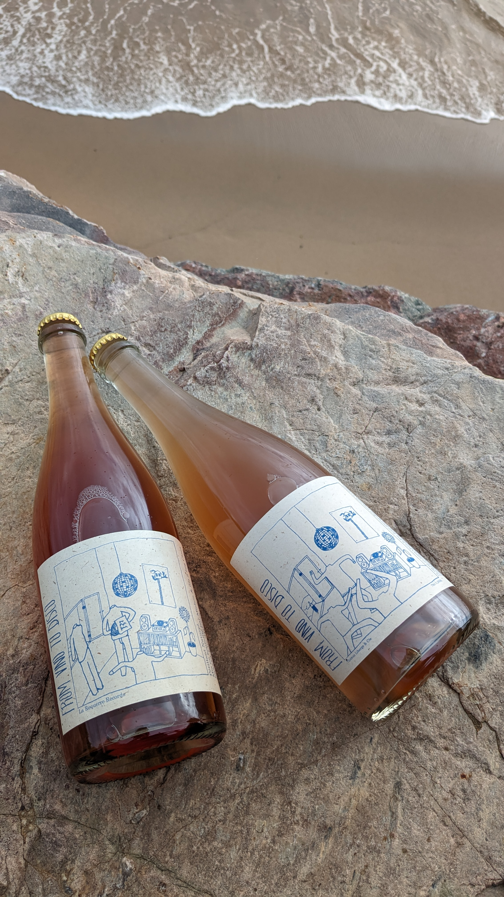

Je suis vigneron en vendée sur le village de l'ile d'olonne.
Je fais le choix d'une agriculture paysanne et agro écologique. Le but étant de structurer les sols biologiquement avec l'aide de la biodiversité qui entoure mes parcelles.
Dans la continuité de mon travail à la vigne les vinifications sont naturelles.
Vous pouvez me contacter au 0604036754 ou sur Instagram
